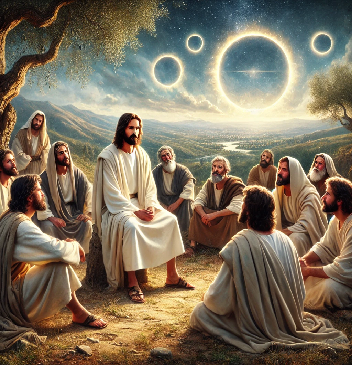

Un fenomeno cosmico di cui parlano antiche scritture che ha lasciato tracce del suo passaggio.
Un'asteroide di piccole dimensioni, qualche centinaio di metri, che sfiora l'atmosfera incendiandola senza cadere sulla Terra.
Impatti che si sono ripetuti ciclicamente con intervalli di circa 500 anni.
Quelli documentati dal 3000 a.C. al 600 a.C. sono la causa di molti diluvi.
Per il suo comportamento anomalo, veniva ritenuto strumento di Dio.
Il gran giorno del Signore
«Gli uomini si rifugeranno nelle caverne delle rocce e negli antri della terra,
di fronte al terrore del Signore, davanti allo splendore della sua maestà,
quando egli sorgerà per scuotere la terra.»
– Isaia 2:19
«I re della terra, i grandi, i comandanti, i ricchi e i potenti, tutti, schiavi e liberi,
si nascosero nelle spelonche e fra le rocce dei monti,
dicendo ai monti e alle rocce: “Cadete su di noi e nascondeteci dalla presenza di colui che siede sul trono
e dall’ira dell’Agnello.”»
– Apocalisse 6:15-16
Tifone , la Cometa di Plinio il Vecchio
Plinio il Vecchio, nella sua opera "Naturalis Historia" (Libro II), descrive una cometa tremenda, osservata dai popoli d'Etiopia e d'Egitto, a cui fu dato il nome Tifone. Questa cometa aveva un aspetto infuocato e ritorto, simile a un nodo di fiamme, tanto da sembrare truce a vedersi.
Le caratteristiche sono tali da ritenere che sia uno dei passaggi di fetonte il distruttore in epoca non precisata.
"Una (cometa), tremenda, fu sperimentata dai popoli d'Etiopia e d'Egitto, e le diede il suo nome Tifone, re di quei tempi: aveva un aspetto infuocato ed era ritorta a forma di spirale, truce già a vedersi, più un nodo di fiamme, per così dire, che una stella."
Plutarco:Tifone, il suono assordante come il raglio di un'asino
Tifone, descritto nei testi antichi come una figura distruttrice, avrebbe prodotto nel suo impatto con l'atmosfera un suono assordante e pulsante, paragonato al raglio di un asino. Questo fenomeno impressionò profondamente le civiltà del passato, che tramandarono il ricordo di tali eventi attraverso simbolismi e tradizioni culturali.
Plutarco, negli Opuscoli, racconta che gli Egiziani, conservando memoria di questo evento, ritenevano gli asini animali impuri. A causa del loro suono caratteristico, simile al fenomeno descritto, vietavano persino l’uso delle ossa di asino per costruire strumenti musicali come le tibie. Questo divieto derivava dalla loro associazione tra il suono del raglio e l’eco assordante di una distruzione celeste.
". . . che a noi di Naucrazia rimproverano i Busiriti, che noi usiamo l'ossa di asino per fabbricare le tibie, e ad essi non è lecito udir solamente la tromba, perché si rassomiglia nel suono al ragghio dell’asino, il quale sapete che dagli Egizi, per conto di Tifone, fu schernito e reputato animale infame."
Questa narrazione suggerisce che gli Egiziani attribuirono all’asino un significato simbolico legato alla paura e al terrore cosmico, forse derivato da un evento catastrofico celeste come il passaggio di una cometa o di un asteroide. Tifone, il distruttore, lascia tracce non solo nei miti, ma anche nelle tradizioni culturali dei popoli antichi.
Pietro ne parla il giorno di Pentecoste
Citando il profeta Gioele
"Farò prodigi nel cielo e sulla terra: sangue, fuoco e colonne di fumo.
Il sole sarà mutato in tenebre e la luna in sangue, prima che venga il grande e terribile giorno del Signore."
Ripreso da Pietro nel giorno della Pentecoste, questo passo assume una nuova prospettiva:
Pietro interpreta i segni di Gioele come un annuncio di trasformazioni cosmiche e storiche, aprendo la strada
al concetto di una **fine del mondo** che si collega al "giorno del Signore."
– Atti 2:19-20
Questa visione ha dato origine al concetto di **fine del mondo**.
Il Giorno del Signore e i Segni nei Cieli
L'idea di una trasformazione radicale dell'universo è ripresa anche nella seconda lettera di Pietro:
"Il giorno del Signore verrà come un ladro; in quel giorno i cieli passeranno stridendo,
gli elementi consumati dal calore si dissolveranno e la terra con quanto c'è in essa sarà distrutta."
Questi segni, che includono il **sole che si oscura**, la **luna che diventa rossa come sangue**
e colonne di **fuoco e fumo**, possono essere interpretati come metafore potenti o descrizioni reali
di eventi cosmici, come:
Eclissi solari o lunari, fenomeni che oscurano il sole e tingono la luna di rosso.
Eruzioni vulcaniche catastrofiche, che possono generare colonne di fumo e oscurare il cielo per mesi o anni.
Impatto di asteroidi, che causano distruzione globale e modificano il clima terrestre.
Celso: la visione ciclica platoniana delle apocalissi
Celso, filosofo greco di ispirazione platoniana, forte oppositore dei cristiani delle origini, sembrerebbe non
concordare con la visione di Pietro della Apocalisse come fenomeno una-tantum alla fine dei tempi.
Piuttosto un fenomeno ricorrente, degli eventi più recenti si conservava la memoria.
"Mosè infatti non presenta, come fanno gli scrittori greci, una sua specifica filosofia. Egli mostra di
credere che il mondo non abbia ancora raggiunto i diecimila anni, ma che sia lontano da questo numero.
Invece si sono verificate nei tempi dei tempi molte conflagrazioni e molte inondazioni. Il diluvio non
molto tempo fa, ai tempi di Deucalione, e la conflagrazione dei tempi di Fetonte sono i più recenti."

Gesù e la Piccola Apocalisse
Si capisce che Gesù aveva discusso di questi temi con i suoi discepoli. Infatti, nella parte dei Vangeli
denominata "Piccola Apocalisse", ci sono diversi riferimenti a fenomeni cosmici catastrofici.
"Il sole si oscurerà, la luna non darà più il suo splendore, le stelle cadranno dal cielo e le potenze dei cieli saranno scrollate."
Questo discorso, riportato nei Vangeli Sinottici (Matteo 24, Marco 13, Luca 21), offre una visione di segni celesti
come **eclissi, caduta delle stelle e terremoti**, che preludono alla fine dei tempi e al ritorno del Figlio dell'Uomo.